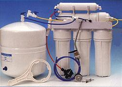

NO ME SALEN
(PROBLEMAS RESUELTOS DE BIOFÍSICA DEL CBC)
MECANISMOS DE TRANSPORTE |
|

|
| |

|
EM 9) A través de una membrana semipermeable que separa dos soluciones de diferente
concentración hay una presión osmótica de 0,25 atm, y el solvente fluye con un caudal
de 5 ml/min. ¿Qué potencia habría que emplear para que el solvente fluya en sentido
contrario con el mismo caudal anterior?
a) 1,25 W b) 2,5 W c) 2 mW
d) 4 mW e) –2,5 W f) –2 mW
|
Acostumbrate: hay una parva de ejercicios cuya única dificultad es tener que homogeneizar las unidades en las que trabajes para poder hacer cálculos. Acá tenés un botón de muestra. |
|
|  |
La presión osmótica vale 0,25 atm; vamos a tener que pasarla a pascales si alguna vez queremos llegar a una respuesta en watts, unidad de potencia que pertenece al sistema de unidades internacional.
π = 0,25 atm = 25.300 Pa
El caudal a metros cúbicos por segundo...
Q = 5 ml/min =
Q = 8,33 x 10-8 m3/s |
| Equipo de 200 dólares para potabilizar agua de mar mediante ósmosis inversa. |
|
|
acordate que
1 atm
equivale a
101.300 Pa |
Y eso fue todo, lo que queda es una pavada. La potencia del proceso osmótico vale (igual que para cualquier flujo):
Poto = π . Q = 25.300 Pa . 8,33 x 10-8 m3/s
Poto = 2,1 mW
Un motor que empuje el agua en sentido contrario con una potencia igual a ésa, sólo detendría el flujo... para lograr un caudal igual y contrario al anterior, tenemos que tener un motor que realice una potencia el doble que la calculada. Sería de 4,2 mW, pero aunte la ausencia de ese valor, elegimos el más aproximado.
|
|
|
|
|
|
Observación: No tiene mucho sentido asignarle signo a las potencias y, de hecho, no es habitual encontrar en la bibliografía potencias negativas. |
|
 |
| DESAFÍO: Animate a formalizar algebraicamente el último razonamiento... el que a partir de la potencia del flujo osmótico nos condujo hasta el resultado. |
|
|
|
| |
|
| Algunos derechos reservados.
Se permite su reproducción citando la fuente. Quien no cite la fuente será penado con reclusión en la Antártida y trabajos forzados. Última actualización sep-08. Buenos Aires, Argentina. |
|
|
| | |
|
|